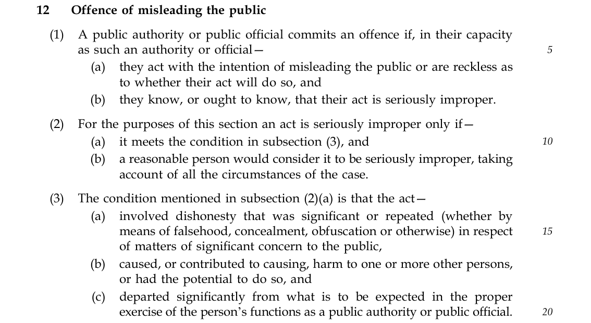
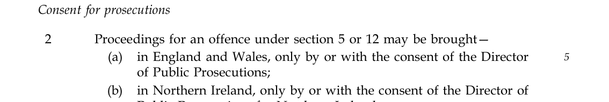
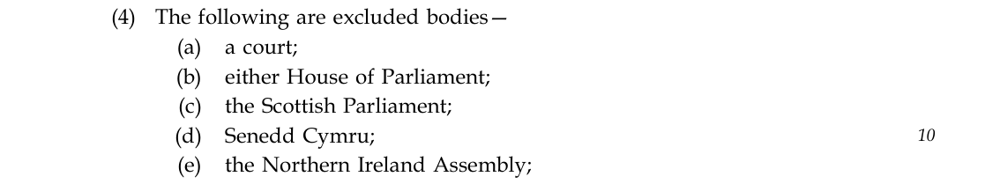
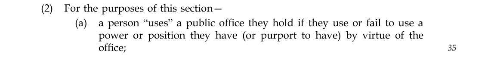
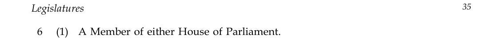
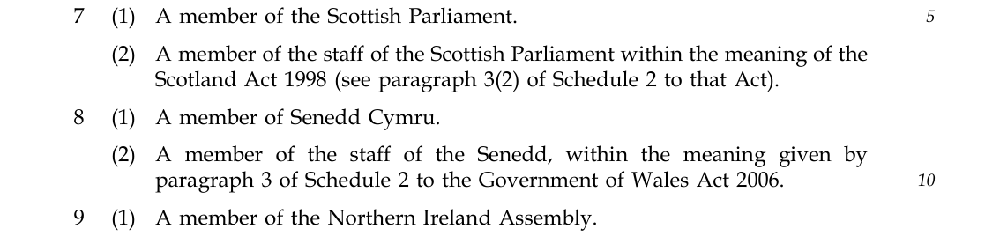

Public Office (Accountability) Bill · Amendment 66A, in the name of Baroness Jones of Moulsecoomb
Adding all UK legislators to the duty of candour and the offence of misleading the public, and defining capacity, functions and harm
A briefing for Members of the House of Lords. Committee of the Whole House.
Summary
What the amendment does. Amendment 66A brings every member of the UK’s four legislatures (Members of both Houses of Parliament, MSPs, Members of the Senedd and MLAs) within the duty of candour and the offence of misleading the public. It keeps everything said or done in parliamentary proceedings outside both offences, protects honestly held political opinion, and defines when a legislator, Minister or mayor is acting “in their capacity” as a public official and exercising their “functions”, and what counts as “harm”.
Why it is needed. As drafted, the Bill makes it a crime for almost every public official in the country to deceive the public, apart from the legislators who are passing it. And the offence of misleading the public depends on two ingredients, acting “in their capacity as such” and the person’s “functions”, which the Bill never defines. The last time a criminal case turned on an undefined test of this kind, the court never reached the question of whether the public had been deceived.
The ask: support Amendment 66A in Committee, and support a vote on it at Report.

In short, you have two choices.
- Do the responsible thing, and hold yourselves to the very same law you are about to impose on nearly everybody else in public life.
- Or spend the next several years being called hypocrites, having betrayed the public’s trust in your offices. You will have to justify, over and over again, why you excluded yourselves, to an increasingly hostile public that will have a statutory reason not to believe a word you say.
This Bill is a historic modernisation of trust and accountability in our democracy, and that is a great thing. If you exclude yourselves from it, you will be left behind it, and you will regret it. In the end you will add yourselves anyway, because you will have no other choice.
Marcus J Ball
1What the Bill currently does
Clause 12 creates the offence of misleading the public. This is the offence as printed:

This is a deliberately high bar. Being wrong is not enough. Changing your mind is not enough. A prosecution must prove all of the following:
- an intention to mislead the public, or recklessness as to whether the act would do so;
- dishonesty that was significant or repeated, about a matter of significant concern to the public;
- harm, or the potential for harm;
- a significant departure from the proper exercise of the person’s functions; and
- that the person knew, or ought to have known, that the act was seriously improper, and that a reasonable person would agree.
No prosecution can be brought without the consent of the Director of Public Prosecutions. The maximum sentence on indictment is two years.

The offence is aimed only at the most serious, deliberate and reckless deception of the public. Within that, its reach is wide. It applies to the Prime Minister, every Minister of the Crown, the Scottish and Welsh Ministers, Northern Ireland Ministers, civil servants, the police, the Armed Forces and security services, NHS staff and local authorities.
It does not apply to a single legislator. Schedule 2 excludes each legislature as a public authority, and no member of any of them is included as a public official:

Ministers are covered, but only as Ministers. The same person, speaking as a Member of either House, is not covered at all.
2The problems with what it does
2.1 The exclusion
The people who speak to the public most are almost the only public officials left outside the law against deceiving it. Members of both Houses, and legislators in Edinburgh, Cardiff and Belfast, are on television, radio and social media every week of the year, speaking about the matters of greatest public importance. Under this Bill, a nurse, a constable and a civil servant can be prosecuted for deliberately deceiving the public. The legislators who passed the law cannot.
2.2 The offence does not define its own central test
Clause 12 only applies where the person acted “in their capacity as such an authority or official” (clause 12(1)), and it measures their conduct against “the proper exercise of the person’s functions” (clause 12(3)(c)). Neither phrase is defined. Clause 12(8), the interpretation subsection, defines “active service”, “armed forces”, “harm”, “the public”, “public authority” and “public official”. It does not define capacity, and it does not define functions.
One clause later, the Bill does define the equivalent idea for the new statutory offence of misconduct in public office:

These are not points of detail. Capacity is the gateway to the whole offence. Before a jury can be asked whether the public were deceived, the prosecution has to establish that the person was acting in their official capacity. If the Bill does not say what that means, every defendant will argue that they were speaking privately, politically or as a candidate, and the offence will be argued on that point instead of on the deception.
2.3 The Law Commission has already warned about this
The common law offence of misconduct in public office is a different offence from misleading the public. But it rests on almost the same legal idea: that the official was “acting as such”, meaning in their official role. The Law Commission reviewed that offence in its report Reforming Misconduct in Public Office (Law Com No 397). It found that exactly what is meant by “public office” and “acting as such” is “not sufficiently clearly defined”, and that this lack of certainty “may be incompatible with article 7 of the European Convention on Human Rights (‘no punishment without law’)”. Article 7 means a person must be able to know in advance whether what they are about to do is a crime.
This Bill abolishes the common law offence, at clauses 17 and 18, because it was too uncertain. Then, at clause 12, it builds a brand new offence on a very similar test, and again leaves it undefined.
2.4 What happened the last time a case turned on capacity
In 2019 a summons was issued against Boris Johnson for misconduct in public office, over statements to the public about public spending during the EU referendum. The Divisional Court quashed it: R (Johnson) v Westminster Magistrates’ Court [2019] EWHC 1709 (Admin). That was my prosecution.
At paragraph 29 the court held that “acting as such” required a finding that the official, in discharging the duties of the office, made the claims complained of. Holding the office was not enough, and the status and influence the office gave him were not enough. The court never decided whether the statements were true or false. The entire case turned on capacity, and it ended there.
If capacity and functions are left undefined in clause 12, prosecutions for misleading the public will go the same way: months of court time and very large sums of public money spent arguing about what capacity someone was speaking in, before anybody examines whether the public were deceived.
2.5 Elections and referendums
When Parliament is dissolved, Members of the House of Commons cease to be Members and become candidates. Government Ministers remain Ministers, with their offices, powers and functions, for the whole campaign. Members of this House remain Members for every day of it.
So a Minister who goes on national television during an election and knowingly or recklessly makes false statements to the public about the powers or functions of their own office could be prosecuted. The person standing against them, perhaps the Leader of the Opposition, who at that moment is not a Member of anything, could not. Nor could any other opposition politician, for the whole of a general election. A general election in which only one side is bound by the criminal law on deceiving the public is a contest that is unbalanced by law.
Referendums raise the same problem. During a referendum campaign, Ministers remain Ministers and the Government remains the Government. In 2016 the Government took an official position and campaigned for it officially, spending £9.3 million of public money on a leaflet sent to every household, headed “Why the Government believes that voting to remain in the European Union is the best decision for the UK”. The Mayor of London made leaving the European Union an official mayoral policy and campaigned for it. Clause 12 says nothing either way about whether it applies to conduct of this kind. We will only find out after the next referendum, in a test case, at enormous public expense.
2.6 The scale of the offence is not stated
Few people are yet discussing this Bill as a law against lying a country into war. But nothing in the Bill prevents it from applying. Imagine a future Prime Minister who repeatedly tells the public that a foreign state possesses weapons that threaten this country. On the strength of that claim we go to war. People die, including British service personnel. Afterwards, evidence emerges that the Prime Minister knew the intelligence was false, or was reckless as to whether it was. Under clause 12, that Prime Minister could be prosecuted. That would make lying to the public to take this country into war a criminal offence for the first time in our history. I am not aware of any other country that has done this.
I do not believe most Members of either House know that the Bill does this. That is precisely the point. We should not discover the scale of this offence through an enormously expensive test case after the next war. It should be stated on the face of the Act, so that every Minister and every public official knows the rules before they speak.
3Our solution: Amendment 66A
This is the amendment exactly as tabled, in the Supplementary to the Marshalled List published on 9 October 2026 (HL Bill 42–I(a)):
BARONESS JONES OF MOULSECOOMB
66A Schedule 2, page 53, line 17, at end insert—
“(14) Subject to sub-paragraph (2), “public official” also includes a member of either House of Parliament, the Scottish Parliament, Senedd Cymru or the Northern Ireland Assembly.
(15) Section 5 and section 12 do not apply to—
(a) anything said or done by any person in proceedings of any Parliament or legislative assembly in the United Kingdom, or
(b) any expression of an honestly held political belief or opinion by a member of either House of Parliament, the Scottish Parliament, Senedd Cymru or the Northern Ireland Assembly.
(16) For the purposes of sub-paragraph (2) and section 12, a person within sub-paragraph (14), the Mayor of London, a mayor for the area of a combined authority or combined county authority, a Minister of the Crown, a member of the Scottish Government, a junior Scottish Minister, a member of the Welsh Government or a Minister or junior Minister within the meaning of the Northern Ireland Act 1998 is treated as acting in their capacity as a public authority or public official, as applicable, and exercising their functions as such when communicating with the public, by any means, about matters of significant concern to the public, including public policy, national security, public expenditure, the allocation of public assets or resources, legislative or democratic processes, and the environment. This sub-paragraph does not apply to communications made in a judicial capacity or concerning solely a person’s private life, family life or private business.
(17) In relation to a communication to which sub-paragraph (16) applies and for the purposes of section 12(3)(b), “harm” also includes undermining the confidence of the public in public authorities, public officials, the exercise of public functions or democratic processes. Such harm may arise, in particular, where the communication is made for the purpose of—
(a) taking the United Kingdom to war or into other military action,
(b) influencing the result of an election,
(c) influencing the result of a referendum,
(d) concealing the causes of, or responsibility for, a disaster or other event involving death or serious injury,
(e) concealing a risk to public health or safety, or
(f) concealing wrongdoing by a public authority or public official, including a breach of the law or of rules, or the misuse of public money.
(18) In sub-paragraphs (16) and (17), “the public” has the same meaning as in section 12.”
Member’s explanatory statement: This amendment would include members of the UK’s four legislatures within the duty of candour and offence of misleading the public, safeguard parliamentary privilege and political opinion, treat certain communications by legislators, Ministers and mayors as official, and treat undermining public confidence, including over war, elections and referendums, as harm.
This amendment is a work in progress. The Public Bill Office adjusted our text before it was printed, which is not ideal. Our preferred version, which we intend to bring back at Report, is here: https://execprosec.org/poabamendments
Most of the amendment speaks for itself. These are the points that need explaining:
Where it sits. The amendment adds legislators to the definition of “public official” in Schedule 2, paragraph 3. The legislatures themselves remain excluded as public authorities, so it is individuals who are responsible, never Parliament or an assembly as an institution. “Subject to sub-paragraph (2)” means legislators are covered only to the extent of their functions, never in their private lives.
Why (15)(a) says “any person” and “any Parliament or legislative assembly”. Article IX of the Bill of Rights protects everyone who takes part in proceedings in Parliament, not only Members: clerks, officials, witnesses and experts giving evidence to committees. The safeguard therefore covers every participant. The Scottish Parliament, the Senedd and the Northern Ireland Assembly do not rely on Article IX in the same way, so the amendment gives their proceedings the same express protection.
How (16) defines capacity. It settles the question the Bill leaves open: when one of the listed people communicates with the public about a matter of significant public concern, they are acting in their public capacity and exercising their functions. That is the reality of the job. Scrutinising the Government in public, debating in public and explaining decisions to the people we serve is not something legislators do alongside the job. It is the job. Sub-paragraph (16) does not make any communication criminal by itself. Every other ingredient of clause 12 must still be proved.
The judicial exclusion in (16). Some Members of this House hold judicial office. While they do, section 137(3) of the Constitutional Reform Act 2005 disqualifies them from sitting or voting in the House. The exclusion ensures their judgments and anything said in their courts cannot be drawn into these offences through their membership of the House.
The scope of (17). The additional category of harm applies only to the public communications of the legislators, Ministers and mayors listed in (16). It does not change what counts as harm for anyone else under clause 12. The six purposes are examples, not new offences.
4Every objection, answered
1. Parliamentary privilege and Article 9 of the Bill of Rights
Raised by: Lord Marks, Lord Sandhurst, Baroness Levitt
Neither offence can ever be used against anything said or done in proceedings in Parliament. Article IX of the Bill of Rights already guarantees that, and sub-paragraph (15)(a) puts it on the face of the Bill, extended expressly to the proceedings of the Scottish Parliament, the Senedd and the Northern Ireland Assembly. Debate in either Chamber, committee work and scrutiny of the Government are completely untouched. These offences could only ever apply to what a legislator says outside proceedings: on television, on radio, on social media and in public.
Privilege cannot in principle be a bar to applying criminal offences to legislators, because this Bill already does it. Schedule 4 makes Members of both Houses, and of all three devolved legislatures, holders of public office for the new offences in clauses 13 and 14, with maximum sentences of ten and fourteen years:


Speaking for the Government on 26 February 2026, Baroness Levitt confirmed: “Both those two very broad offences do apply to MPs and Peers, as well as to a number of other public office holders, including judges.” The constitutional step has already been taken. The only question is whether legislators should also be bound by the one offence in the Bill that is about honesty to the public.
2. Parliament should regulate its own Members, and existing parliamentary sanctions are enough
Raised by: Lord Marks, Lord Sandhurst, Baroness Levitt
Parliament’s own systems, the Commissioners for Standards, the codes of conduct and the procedures for misleading the House, deal with conduct in Parliament. This amendment does not touch any of them, and they will carry on exactly as now. The two offences could apply only to statements made outside parliamentary proceedings, so there is no overlap. For a falsehood told to the public on national television during an election campaign, there is currently no sanction at all, because no proceeding of Parliament is involved.
3. The Nolan principles already require honesty
Raised by: Baroness Levitt
The Nolan principles are valuable, and they establish that holders of public office have a duty to be honest. But they have been in place for three decades and have shown that they are not enough. They are not law. They create no offence, no independent adjudication and no remedy for the person deceived. The only criminal backstop has been the common law offence of misconduct in public office, which has never been successfully applied to a politician lying to the public, and which this Bill abolishes. A statutory offence is needed, and it needs to be clear and precise.
4. Backbenchers do not take decisions on behalf of the state
Raised by: Lord Sandhurst, Baroness Levitt
Backbenchers scrutinise the decisions of the state, which is just as vital to our democracy. They examine Government decisions and Government spending, approve or reject budgets, and vote on legislation. They are among the most senior and most public-facing democratic leaders in the country. When they tell the public what the state is really doing, the public must be able to trust them.
Neither a nurse nor a constable takes decisions on behalf of the state, and both are covered by clause 12. Liability under this offence has never depended on who takes the decision. It depends on who deceives the public. A backbencher does not need executive power to deceive the public effectively. They have the status, the platform, the connections and the trust that come with being a legislator, and those are what make deception damaging.
5. Legislators do not have the information Ministers have
Raised by: Baroness Levitt
A person does not need privileged information in order to deceive the public. What makes deception effective is status, access, connections, the public’s trust and the public’s expectation of honesty. A national legislator has all of these, in greater measure than almost anyone this Bill already covers.
Consider a Minister and an opposition spokesperson debating on television. The Minister has access to Government information and the spokesperson does not. Under the Bill as drafted, the Minister commits an offence if they deliberately deceive the public about information they hold. The spokesperson commits no offence if they deliberately deceive the public about information they do not hold. That cannot be right.
6. The offence is for Hillsborough-style cover-ups, not for politics
Raised by: Baroness Levitt, Lord Sandhurst
The Bill does not say that anywhere. Clause 12 is written carefully to address deliberate and reckless deception of the public in general. It contains no limitation to disasters, to cover-ups or to any particular category of lie. A criminal statute is read by the courts according to its words, not the intentions of those who moved it. If Parliament wants the offence to be narrower than it reads, it must say so on the face of the Act. If it does not, the House should know now that it is creating an offence capable of reaching a Prime Minister who deceives the public to start a war.
7. This is the wrong vehicle for regulating political speech
Raised by: Baroness Levitt
The amendment does not regulate political speech. Freedom of political expression is protected by Article 10 of the European Convention on Human Rights, and sub-paragraph (15)(b) expressly excludes any honestly held political belief or opinion. Opinions, however unpopular or extreme, cannot be prosecuted if they are honestly held.
What remains is the proven, intentional or reckless deception of the public on a matter of fact of significant public concern: lying to cover up a disaster such as Hillsborough, lying to take the country to war, or lying to manipulate the result of a referendum. That is not political speech. It is deception of the public.
8. It would criminalise broken promises
Raised by: Lord Young of Acton
It would not. Clause 12 requires proof of an intention to mislead the public, or recklessness as to whether the act would do so. A promise honestly made and later broken is not dishonest, and a change of policy is not a crime. The only case in which a broken promise could come near the offence is one where the person never intended to keep it, or knew they could not, when they made it. Proving that would require evidence, such as their own recorded words, that they did not believe what they were promising. In practice that evidence will rarely exist.
9. The law should distinguish lying about politics from lying about personal character
Raised by: Lord Thomas of Cwmgiedd, endorsed by Lord Marks
This point has real merit as a description of the current law, but it does not answer the question. The existing election offence of making false statements about a candidate’s personal character protects candidates from being lied about by each other. It is a narrow rule, set in a very different age, and it does little for the public.
Today, what politicians say reaches us on our phones, on television, on radio and in the press, all day, every day, and it is recorded and archived as never before. Lies about a candidate’s personal character matter far less to the public than lies told to manipulate a referendum result, to win an election, to start a war, or to secure valuable public contracts during a national emergency such as the COVID-19 pandemic. The law currently protects a candidate’s reputation from lies but does not protect the electorate from them.
10. Election periods would be especially dangerous
Raised by: Lord Thomas of Cwmgiedd
Elections are the point of greatest risk, and that is the reason to act. An election is when the public has most contact with legislators, Ministers and politicians generally, and when deception does the most damage. It is the most important period in the life of a democracy. As explained in section 2.5, under the Bill as drafted Ministers remain covered throughout an election while their opponents are not.
Public trust in politicians is already very low. The Ipsos Veracity Index has for many years placed politicians among the least trusted professions in the country. An election fought without any law against deceiving the public is not a safe default. It is part of the reason for that distrust. Applying the offence to election periods would require politicians to check their claims, take advice and stand behind what they say. It would make campaigns more careful, more professional and more honest.
11. Politically motivated prosecutions and lawfare
Raised by: Lord Young of Acton, Lord Thomas of Cwmgiedd, Lord Marks, Lord Sandhurst
No prosecution under clause 12 can begin without the consent of the Director of Public Prosecutions (Schedule 3, paragraph 2). That requires any private prosecution to meet the same standard as a prosecution brought by the Crown Prosecution Service. It is a strong and appropriate safeguard against vexatious and politically motivated cases.
Amendment 80, in the names of Lord Keen of Elie and Lord Wolfson of Tredegar, would also require the consent of the Attorney General. I would urge the House to resist it. The Attorney General is appointed and can be dismissed by the Prime Minister of the day. A Government could block a prosecution of one of its own while leaving its opponents exposed. That would give the Government of the day protection from the criminal law that the opposition would not have.
Prosecutions of senior politicians are already extremely rare, because of their cost, risk and difficulty. The only case of this kind that I am aware of being described as vexatious is my own, Ball v Johnson (2019). It was stopped by two judges, one of whom had previously acted as Mr Johnson’s lawyer, and the other of whom had written to him praising his profound sense of public duty. Neither disclosed this. A documentary film about the case, which alleges that it was unlawfully shut down, is in production with Sozo21, whose team has made films for Netflix, Amazon, Apple and Channel 4, and is produced by Emmy-nominated Tom Goodman-Hill.
12. Complaints to the police would become routine
Raised by: Lord Thomas of Cwmgiedd, Lord Young of Acton, Lord Sandhurst
Anyone can already complain to the police about a Member of either House under the common law offence of misconduct in public office, and will be able to do so under clause 13, because Schedule 4 already includes Members of both Houses. This amendment creates no new ability to complain.
In the short term there will be complaints, which is exactly why the offence must be clearly defined. Sub-paragraph (16) settles the capacity question, so unmeritorious complaints can be disposed of quickly. In the longer term, a law of this kind should change how politicians communicate with the public. We expect it to make public communication more careful and more professional, and over time to end the habit of treating “politician” and “liar” as the same word.
13. DPP consent is not enough, because investigation is itself a punishment
Raised by: Lord Marks, Lord Young of Acton
This is true of every person the Bill covers. A nurse, a head teacher and a chief constable all live with the possibility of an investigation that ends in nothing. Anyone in society suspected of a criminal offence may be investigated before any decision to prosecute. Parliament is proposing to apply these offences to almost every other public official in the country. There is no principled basis on which legislators alone should be spared the same process.
An investigation will not be pleasant for anyone. But the public feel that they have been deceived about matters of enormous importance for decades, and that has done them real harm too. It is time to change that.
14. An authoritarian majority could abuse the offence
Raised by: Lord Sandhurst
This is exactly why the decision to prosecute must rest with the Director of Public Prosecutions, who is independent of Government, and not with the Attorney General, who is a member of it. More fundamentally, criminalising deliberate deception of the public makes authoritarian government less likely, not more. History shows that authoritarian movements have depended on deceiving the public at scale to gain power. That is much harder to do when those responsible face prosecution as individuals.
15. It would chill debate and scrutiny
Raised by: Lord Marks, Lord Sandhurst
Nothing said or done in proceedings of any UK Parliament or assembly can be touched, and sub-paragraph (15)(a) puts that beyond doubt. Outside proceedings, honestly held political opinion is expressly protected by (15)(b). The offence already requires proof of intentional or reckless deception. An honest Member has nothing to fear from this law.
Healthy debate and effective scrutiny do not depend on the freedom to lie. The opposite is true. During the 2016 EU referendum, the winning side relied on a claim about the UK’s payments to the European Union that was shown to be false, and that leading politicians, including Boris Johnson MP, then Mayor of London, advanced knowing it to be false. Vote Leave’s campaign director later wrote that, without that claim, Leave would not have won. That is the lesson: with no law against it, deceiving the public about their own money can decide a national vote. Political debate needs to be held to honest statements.
16. The ballot box is the remedy
Raised by: raised generally
Elections decide who holds power. They are a verdict on everything at once, delivered every few years. They cannot examine evidence, test it, or decide beyond reasonable doubt whether someone abused their position by deceiving the public. Only a criminal trial can do that. The majority of Members of this House do not stand for election at all.
In 2003 millions of people came to believe that the Government had deceived the public in order to invade Iraq, in a war in which hundreds of thousands of people died. Whether that is right has never been tested before a jury, because there was no statutory offence and no prosecution was brought. The Government was eventually voted out, but nobody believes that an election answered the question. The same is true of referendum campaigns and of conduct during the COVID-19 pandemic.
A conviction would not automatically remove anyone from office either. A Member of the House of Commons is disqualified only by a prison sentence of more than one year; a shorter custodial sentence triggers a recall petition, which returns the decision to voters. A Member of this House ceases to be a Member only on a sentence of more than one year. Voters want to choose their representatives, and they also want to see them face a jury if they deceive the public about something serious enough.
17. Judges are excluded too
Raised by: Baroness Levitt
We raised this with the Government at our meeting with Lord Lemos, and our view is that judges should be included. But our campaign is focused on legislators, which is already a significant change. Judges are already within Schedule 4 for clauses 13 and 14. The question of including them in clause 12 can follow, once the offence has been seen to work.
18. The cure may be worse than the disease
Raised by: Lord Sandhurst
The disease is already serious. Politicians are among the least trusted people in our society, and doing nothing is a choice with consequences of its own.
If this Bill becomes law with legislators written out of it, the press and the public will notice, and they will not forgive it. The pressure to correct it will be relentless, and when Parliament eventually includes itself, it will receive no credit, because it will be seen as the bare minimum. It is far better for Parliament to lead now than to be forced into it later.
You would not be alone
Members of this House who have told us they support including legislators:


5Conclusion
Parliament cannot pass a law against deceiving the public that applies to almost everyone except itself. Amendment 66A includes every UK legislator safely: parliamentary privilege is protected on the face of the Bill, honest political opinion is protected, the criminal threshold is high, and every prosecution needs the consent of an independent prosecutor. It also fixes the undefined test at the heart of clause 12, which would otherwise weaken the offence in every case brought under it, against anyone.
The ask: please support Amendment 66A, speak in favour of it in Committee, add your name to it, and vote for it at Report.
I am grateful for your time. Every statement in this note can be checked against the Bill, the Law Commission’s report, the judgment and the debates referred to below.
Marcus J Ball
ExecProsec
https://execprosec.org/poabamendments
References
- Public Office (Accountability) Bill, HL Bill 42 (59/2), as brought from the Commons on 16 July 2026: clause 12; clause 13(2)(a); clauses 17 and 18; Schedule 2, paragraphs 2(4) and 3; Schedule 3, paragraph 2; Schedule 4, paragraphs 6 to 9.
- Amendment 66A, Baroness Jones of Moulsecoomb, Supplementary to the Marshalled List, 9 October 2026, HL Bill 42–I(a). Amendment 80, Lord Keen of Elie and Lord Wolfson of Tredegar, Marshalled List, 8 October 2026, HL Bill 42–I.
- Law Commission, Reforming Misconduct in Public Office (Law Com No 397), paragraphs 3.9, 3.13 and 3.41.
- R (Johnson) v Westminster Magistrates’ Court [2019] EWHC 1709 (Admin), paragraphs 29 and 30.
- House of Lords debate on the exclusion of parliamentarians from the Public Office (Accountability) Bill, 26 February 2026.
- Constitutional Reform Act 2005, section 137(3). Bill of Rights 1689, Article IX.